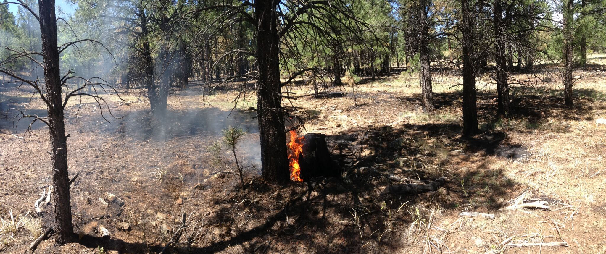
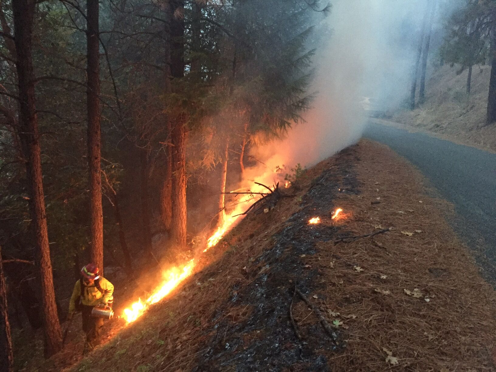
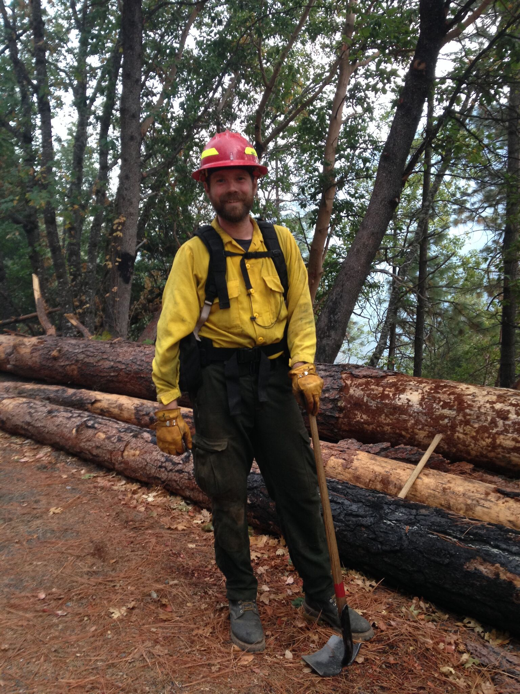
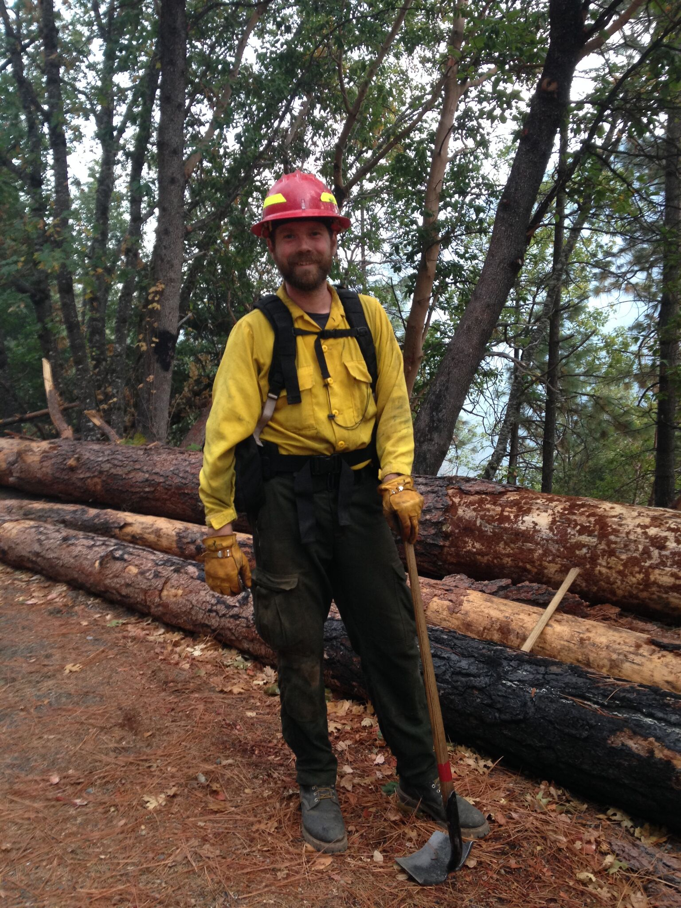

Wildfire, Cultural Resources, and Public Archaeology
In 2015, wildfires burned over 10 million acres in the United States and cost the federal and state governments over 300 million dollars in prevention/suppression. In addition to my research on prehistoric fire regimes, I also apply my knowledge of archaeology and fire ecology as an archaeological resource advisor on wildland fire incidents in Arizona. I am trained as wildland firefighter (Qualified Firefighter Type 2 and Firefighter Type 1 Trainee) and archaeological resource advisor working with the US Forest Service. I work alongside firefighters to protect archaeological sites from wildfires and potentially destructive firefighting activities. I am passionate about public lands and preserving the natural and cultural resources for everyone to enjoy and appreciate.
 
